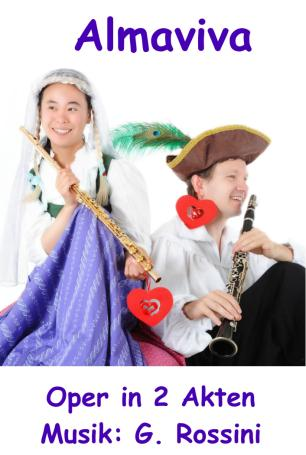
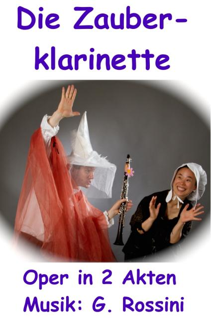
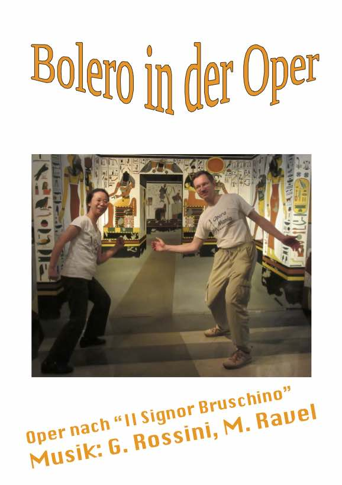
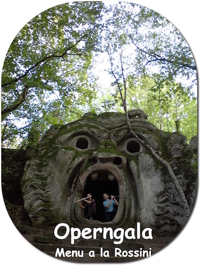

Die kleinste Oper der Welt...
Aktuell Über uns Repertoire Die Künstler Gästebuch & Presse Preise & Konditionen Spielplan & Karten Workshop Kontakt
"Largo al factotum della citta"
"MDR Figaro - Hörer empfehlen Kultur"
zum Seitenanfang
Aktuell
|
Musikkurs mit Kiki & Kuku !
Suchen Sie eine ruhige Ambiente zum Musizieren und Inspirieren ?
Für Covid-19 folget hier die Kur, ♪ MUSIK IN DER GONDEL ♪ OperaMania zum Verschenken !
Suchen Sie ein Geburtstagsgeschenk ?
Sie können die Oper buchen ! →
Preise & Konditionen
| Supported by: |
zum Seitenanfang
|
OPERAMANIA präsentiert verschiedene Opern aber NUR ZU ZWEIT !!?? Orchester, Sänger/Innen, Dirigent, Regisseur usw. gibt es bei uns nicht... Genießen Sie brilliante Opernmusik, von KIKI und KUKU als Duette für Flöte & Klarinette liebevoll selber bearbeitet, musikalische Witze, originelle Anekdoten, Kostüme, und viele Überraschungen !! |
Unsere unterhaltsamen und feinen Produktionen sind komische Opern,
z.B. Giacchino Rossini: “Il Barbiere di Siviglia”, “La Cenerentola”, “Guillaume Tell”...
und eignen sich für alle Leute, Kinder und Erwachsene
bei jeder Art von Feier,
z.B. -
Geburtstagsfeiern -
Hochzeiten -
Firmenfeste ...
|

Workshops
Clavichord bauen und spielen:
Termine "Venedig - Dresden"
Spielen Sie eine Instrument und haben Sie Lust, selber eine kleine Oper einzustudieren ? - Auf unseren Workshops beraten wir Sie gerne. Schreiben Sie uns an.
*****
zum Seitenanfang

auch bekannt als „Die unnütze Vorsicht“ oder „ Der Barbier von Sevilla“
Komödie von Pierre Augustin Caron de Beaumarchais (1732-1799)
Musik von Gioacchino Rossini (1792-1868)
Ort der Handlung: Sevilla, Spanien, 17. Jhdt.
Graf Almaviva ist verliebt in die schöne Rosina, die bei ihrem Vormund, dem Apotheker Dr. Bartolo lebt. Almaviva will nicht seines Geldes wegen geliebt werden, er gibt sich als armer Lindoro aus und gewinnt Rosinas Herz.
Das einzige Problem – auch Dr. Bartolo möchte Rosina heiraten, er bewacht diese streng und vertraut nur seiner attraktiven Haushhälterin Marcellina.
Der allseits beliebte Friseur Figaro ist ein Freund von Almaviva und Dr. Bartolo ist sein Stammkunde.
Wird es mit seiner Hilfe gelingen, die Oper zu einem glücklichen Ende zu bringen...?
Spieldauer: 90 min (inkl. Pause) oder Kurzfassung ohne Pause 60 min

Komödie von Felice Romani (1788-1865)
Musik von Gaetano Donizetti (1797-1848)
Die Liebe fällt wohin sie will – oder geht sie doch durch den Magen? Der unglücklich in Adina verliebte Nemorino sucht nach einem Wundermittel bei Dr. Dulcamara. Probieren auch Sie seine neuesten Erfindungen !
Spieldauer: 80 min (inkl. Pause) oder Kurzfassung ohne Pause 60 min

auch bekannt als „Aschenputtel“ oder „ La Cenerentola“
Komödie von Jacopo Ferretti (1784-1852)
Musik von Gioacchino Rossini (1792-1868)
Der geizige Don Magnifico geht mit seinen Töchtern Clorinda und Thisbe zum Tanzball ins Schloß, will aber seine Stieftochter Cenerentola nicht mitnehmen.
Erleben Sie die wahre Geschichte des beliebten Märchens und wie eine Zauberklarinette dabei entscheidend mitwirkt !
Spieldauer: 80 min (inkl. Pause) oder Kurzfassung ohne Pause 50 min

auch bekannt als „Il Signor Bruschino“
Komödie von Giuseppe Maria Foppa (1760-1845)
Musik von Gioacchino Rossini (1792-1868)
Florville will Sofia heiraten, aber ihr Vormund Gaudenzio hat schon alles ganz anders fix geplant: Sofia soll den Sohn seines alten Freunds Bruschino heiraten...
Spieldauer: 30 min

von Erich Kästner (1899-1974)
Musik von Coboflupi (*1971)
Aufführungsrechte beim Verlag für Kindertheater Weitendorf, Hamburg
Nehmen Sie an einer internationalen Konferenz teil, in der mit viel Ironie und Humor alle Probleme der Welt gelöst werden...!
Altersempfehlung: Erwachsene und Kinder ab 10 Jahren "... für Kinder und Kenner" (E. Kästner)
Spieldauer: 100 min (inkl. Pause) oder Kurzfassung ohne Pause 45 min

Eine Verkostung erlesener Opernmelodien. Ihre Gäste wählen aus der musikalischen Speisekarte.
Spieldauer: 30 - 50 min

Spieldauer: 30 - 50 min
*****
zum Seitenanfang
Die Künstler:
Operamania wurde von Tomomi Okuno und Martin Rotter 2008 in Oxford gegründet.
|
Tomomi Okuno, „Kiki“ geb. 1979 in Osaka, Japan, Studium der Querflöte an der Musikuniversität in Osaka und Wien, neben klassischer Querflöte spezialisierte sie sich auf alte Musik, Traversflöte, Meisterkurse in Europa. Konzerte mit Mitgliedern der Landesbühnen Sachsen, Staatskapelle Dresden, Dresdner Philharmonie, Dresdner Gittarenensemble und Nara International Music Academy. | Martin Rotter, „Kuku“ geb. 1968 in Klosterneuburg, Österreich, Studium der Klarinette an der Musikuniversität in Wien. Gründer des legendären „Glassscherben Qartetts“, in dem er auf dem „Pickssüßen Hölzl“ das Publikum mit Wiener Schrammelmusik begeistert. Die beiden bezaubern auch mit einer traumhaften Klangwelt auf historischen Instrumenten, Traverso und Clavichord – die wohl leiseste Philharmonie und bieten regelmäßig Clavichordbausworkshops in Wien, Dresden und Venedig an - Sprechen Sie uns an ! → https://operamania.github.io/homepage/TC |
*****
zum Seitenanfang
~ Aus unserem Gästebuch ~
|
- Wir erlebten heute das ganz ausgezeichnete Duo Kiki und Kuku. Beide sind exzellente Künstler auf ihren Instrumenten. Mit viel Humor brachten sie uns den “Barbier von Sevilla” nahe. Ganz herzlichen Dank !
- Herzlichen Glückwunsch! Was für eine wunderbare Klangfarbe der Flöte & Klarinette ... Mit nur zwei Instrumenten brachten sie uns eine Musikwelt wie mit vollem Orchester. Ich hätte das so gerne meine Schüler hören lassen. Bitte, macht wieder mal eine Aufführung in Japan !
- Es war sehr lustig. Die Flöte und die Klarinette mischen sich erstaunlich gut !
-
Drei Musikfans sagen ein herzliches Dankeschön für eine amüsante und musikalisch exzellente Opernaufführung !
Zwei wunderbaren, einfallsreichen Künstlern weiterhin viel Erfolg !
- Es war sehr gut besonders für Kinder.
- Wunderbar, wie zwei Musikanten eine ganze Oper mit Witz für alt und jung präsentieren.
- Vielen Dank für den heiteren, berührenden Nachmittag mit so viel Scharm, Witz, Musikalität und Herz !!! Sie sind zwei wunderbare, besondere Menschen und Musiker !
- Nicht nur Musiker, sondern auch Komödianten und wunderbare Schauspieler, das ist das Geheimnis dieser "kleinen" Oper.
- Zu träumen mit Euch zu Eurer Geschichte mit Eurer zauberhaften Musik, DANKE !!
- Die exzellente Musiker haben uns mit kurzweiligen Texten zum Thema "Cenerentola" einen wunderschönen Nachmittag bereitet.
- Vielen Dank für die große künstlerische, geniale und kreative Leistung - echte Lebenskünstler...
- Herzlichen Dank für diese wunderbare Vorstellung "Bolereo in der Oper", künstlerisch sehr hohes Niveau. Besonders hat mir der "Boleromat" gefallen. Ich hatte gar nicht gedacht, daß ein Laie Euch so gut begleiten kann... |
- Das war Klein-"Kunst" pur. Hätte nie gedacht, dass eine ganze Oper von nur 2 Darstellern mit meisterhaft gespielter Flöte und Klarinette so erfrischend und sympathisch dargeboten werden kann. Es überzeugte einfach alles, vom Kartenverkauf bis zur herzlichen Verabschiedung. Und bei derartigen Künstlern mit solch originellen Kostümen bedarf es einfach keiner aufwendigen Requisiten und Technik. Einfach wunderbar !
- Vielen Dank für Ihr wirklich schönes Spiel! Heute war es das erste Mal für mich, eine Oper anzuschauen. Aber ich habe daran gar nicht gedacht, dass es eine Oper gibt, in der die Schauspieler "Cha demo shibakini ikoka !?" (="Gehen wir einen Tee vernichten" ...Trinkspruch aus Osaka) sagen! Sehr lustig !! - So macht Oper endlich wieder Freude !
- "Schon wieder Oper..." Aber dann - Oper zum verlieben, frohlockend, heiter, ideenreich, wahnsinnig... Wir haben so gelacht.
- Ein Genuss !!! Mit vorzüglicher Hochachtung !!
- Vielleicht ist Freude, die man schenkt, viel wichtiger als manche denkt. - Kleine Oper - große Musik - Ein perfektes Duett ist immer mal nett. - Ich liebe Oper und konnte nicht glauben, dass nur 2 Musiker die ganze Oper von Rossini auf die Beine stellen könnten. Und es ist doch möglich ! - Ihr Zwei wart überraschend, fröhlich, der kultuerelle Höhepunkt des Jahres ! - Ein kleines Format - eine große Kunst ! - Lustig und ernst zugleich - sehr empfehlenswert ! Auch die musikalische Darbietungen waren sehr sehr schön. - Bis jetzt wussten wir nicht, dass man Klassik so humorvoll darbieten kann.
|
~ Presse ~
|
- Märchenhafte Klänge am Pavillon, Sächsische Zeitung am 30. Mai 2014 zur Zauberklarinette, "einer italienischen Version des Aschenputtels ... künstlerisch beeindruckend, theatralisch erfrischend und für Kinder und Erwachsene." - Musikalisch-literarisches Kleinod, Zeitung zum Tharandter Stadtfest 2014 "Diese mitreißende Opern-Essenz wird alle begeistern: 2 Musiker-Darsteller-Tänzer, eine Bühne, fertig ist die Oper, diesmal die Zauberklarinette im Westentaschenformat." - Die kleinste Oper der Welt spielt in Bannewitz, Bannewitzer Blick Juni 2015 "Wer die beiden begeisterungsfähigen Musikanten, Komödianten und wunderbaren Schauspieler bereits einmal erlebte, wird sich diesen Leckerbissen an humoristischer und exzellenter musikalischer Darbietung nicht entgehen lassen." - Kleinste Oper der Welt ist auch für die Macher ein großer Spaß, Morgenpost am Sonntag 15. Mai 2016, "Eine gute Oper braucht kein großes Orchester ! Das beweisen Kiki und Kuku. Sie sind nicht nur die kleinste Oper der Welt, sondern auch die einzige, die immer mit dem Fahrrad zu ihren Spielorten fährt." |
- Oper für die ganze Familie bieten sie an: Kurz und fidel, Sächsische Zeitung am 19. April 2017 von Nadia Laske, "Das Klima in Oxford hat Tomomi Okuno, Martin Rotter und ihre kleinste Oper der Welt nach Dresden gebracht. ... Ihre Oper ist nicht nur die kleinste, sondern auch wirtschaftlichste der Welt." - Klein aber fein, abcreisetipps.de "Wir waren zu einer kleinen Familienfeier eingeladen, Grund war ein runder Geburtstag. Als Überraschung gab es eine kleine Showeinlage von OPERAMANIA. Die kleinste Oper der Welt präsentierte nur zu Zweit tolle Opernmusik auf Flöte und Klarinette. Dazu kamen noch viele weitere Überraschungen, wie zum Beispiel musikalische Witze und lustige Kostüme. Die kleine spontane musikalische Einlage war schön und wir hatten alle viel Spaß. Also wenn Ihr mal eine Idee für die Geburtstagsfeier oder das Firmenfest sucht, können wir Euch das lustige Duo auf jeden Fall empfehlen." |
*****
zum Seitenanfang
Wir wollen Ihr Lachen sehen und
freuen uns auf Ihr Interesse !!!
Wenn Sie in unregelmässigen Abständen über unsere geplanten Auftritte informiert werden möchten,
schreiben Sie uns eine E-mail !
Kontakt:
OPERAMANIA
Tel.: (+49) 0176 5032 55 53
E-mail: operamania[at]icloud.com
Links:
zum Seitenanfang
Impressum Datenschutzerklaerung Last updated on 9th, November 2023